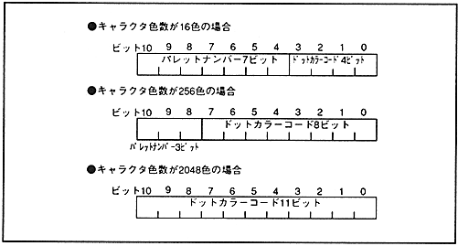
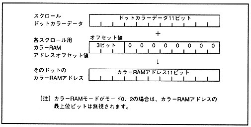

Palette format scroll dot color data varies depending on the number of character colors specified. The color RAM address offset value corresponding to each surface is added to the upper 3 bits of the 11-bit dot color data to obtain the color RAM address for that dot. When the color RAM mode is set to mode 0 or mode 2, the most significant bit of the color RAM address is ignored.
Since the line color screen does not have a corresponding color RAM address offset value, the 11-bit value read from the line color screen table becomes the color RAM address as it is.
Pallet format scroll dot color data is shown in Fig. 10.3 and scroll screen color RAM address is shown in Fig. 10.4.
Figure 10.3 Scroll dot color data in palette format

Figure 10.4 Scroll color RAM address
